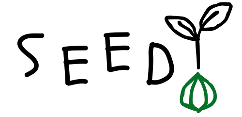
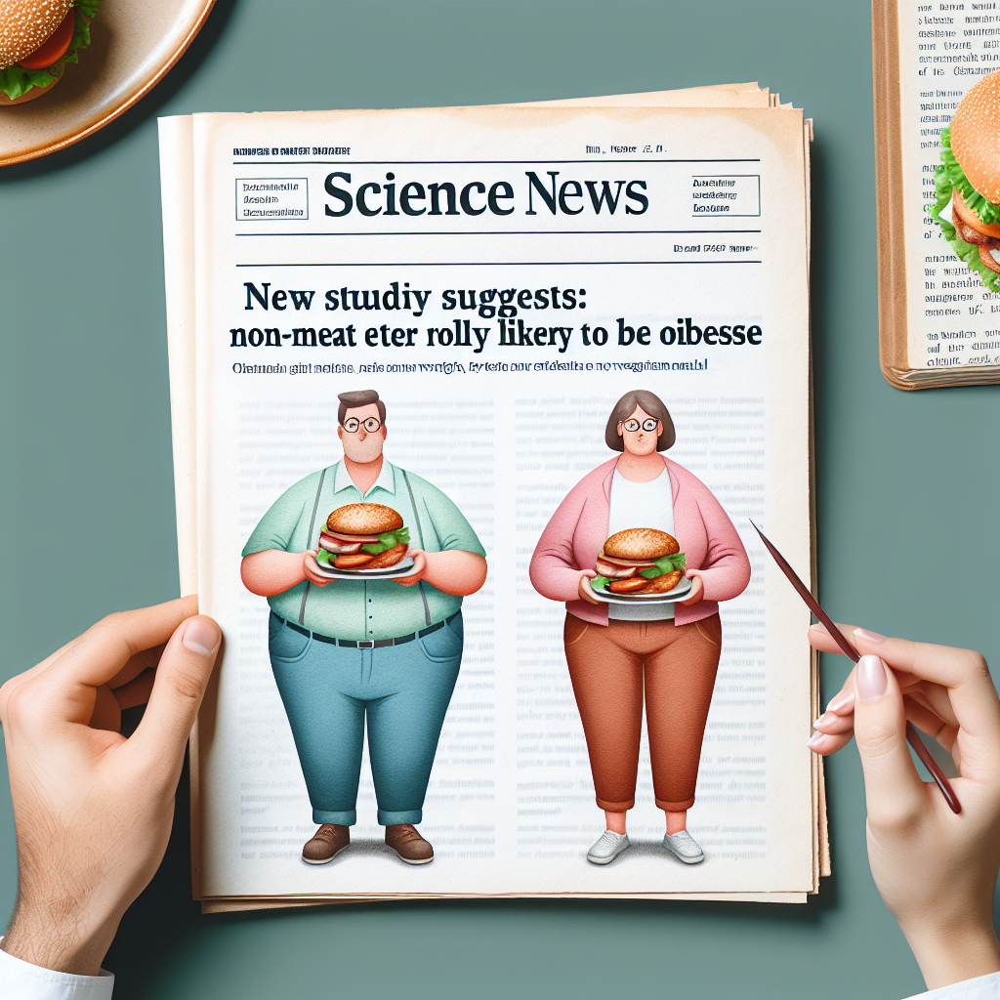

A new study suggests that people who don't eat meat are more likely to be obese


According to a new study, researchers have found that people who don't eat meat are actually more likely to be obese. The shocking revelation has left many vegetarians scratching their heads, wondering how all those kale smoothies and quinoa salads could have betrayed them. In response, one tofu-loving participant exclaimed, "I guess I'll just have to start deep-frying my broccoli if I want to fit in with the rest of the overweight population!"